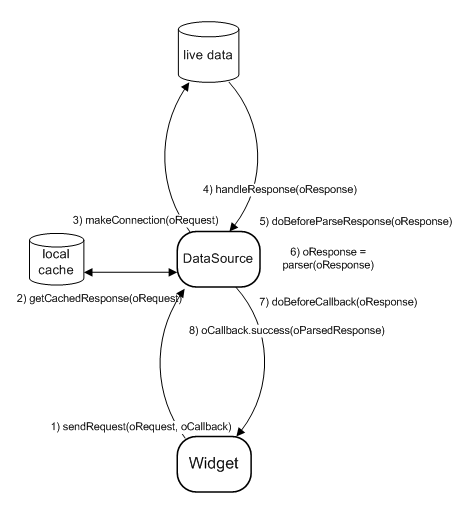

<?php 
$title="Yahoo! UI Library: DataSource";
$section="datasource";
$component="DataSource Utility";
$highlightSyntax = true;
$releasenotes = true;
include "../inc/header.inc";
?>

<div id="yui-main">
  <div class="yui-b">
    <div class="yui-ge">
      <div class="yui-u first">
        <div id="promo" class="component">
          <h1>DataSource</h1>
          <p>The DataSource Utility provides a common configurable interface for other components to fetch tabular data from a variety of local or remote sources, from simple JavaScript arrays to online database servers. It is a required dependency of the <a href="http://developer.yahoo.com/yui/datatable/">DataTable</a>, <a href="http://developer.yahoo.com/yui/charts/">Charts</a>, and <a href="http://developer.yahoo.com/yui/autocomplete/">AutoComplete</a> controls.</p>
          
            <p>The DataSource will request data and then return the response to a callback function. It has the capability of going deep into the hierarchy of the source data, selecting specified fields from the raw output, parsing data as indicated and calling the provided callback function when finished.</p>
            
            <p> The DataSource has an optional local cache to store retrieved and parsed data. It can also be set to periodically poll for data.</p>
            
            <p><strong>Note: </strong>As of the 2.6.0 release, DataSource has been refactored into a base class and subclasses. While backward compatibility has been maintained whenever possible, implementers who are upgrading from an earlier version are strongly advised to read the <a href="#upgrade">Upgrade Notes</a> to smooth the transition.</p>


          <div>
            <h4>On This Page:</h4>
            <ul>
              <li><a href="#upgrade">Upgrade Notes</a></li>
              <li><a href="#start">Getting Started</a></li>
              <li><a href="#overview">Overview</a></li>
              <li><a href="#instantiating">Instantiating a DataSource</a></li>
              <li><a href="#schemas">Setting <code>responseType</code> and <code>responseSchema</code></a></li>
              <li><a href="#parsers">Type Conversion</a></li>
              <li><a href="#caching">Caching</a></li>
              <li><a href="#polling">Polling</a></li>
              <li><a href="#events">Custom Events and "doBefore" Abstract Methods</a></li>
              <li><a href="#xhr">Using XHRDataSource</a></li>
              <li><a href="#scriptnode">Using ScriptNodeDataSource</a></li>
              <li><a href="#support">Support &amp; Community</a></li>
              <li><a href="#filingbugs">Filing Bugs and Feature Requests</a></li>
            </ul>
          </div>
          <?php
include('../inc/quicklinks.inc');
?>
        </div>
        <h2 id="upgrade" class="first">Upgrade Notes</h2>

        <p>Users new to DataSource can skip this section and proceed directly to the <a href="#start">Getting Started</a> section. Implementers who are upgrading from previous versions of DataSource should note the following changes as of version 2.6.0:</p>
        
        <ul class="jump">
            <li>The DataSource class has been refactored into a DataSourceBase base class and the subclasses LocalDataSource, FunctionDataSource, XHRDataSource, and ScriptNodeDataSource. While backward compatibility of the YAHOO.util.DataSource constructor has been maintained, implementers should be aware that calling <code>new YAHOO.util.DataSource()</code> now actually returns one of these subclasses. Implementers can alternatively call a subclass constructor directly. The DataSource constructor returns one of the subclasses based on the oLiveData passed to it, or the dataType config value. This class-based architecture no longer meaningfully supports swapping data types on the fly.</li>
            
            <li>Parsing of totalRecords is no longer supported as a top-leval schema value. Implementers should access this data as a <code>metaFields</code> value.</li>
        </ul>
                
        <h2 id="start">Getting Started</h2>
        <p>The DataSource code must be included before any control can use it:</p>
        <textarea name="code" class="HTML" cols="60" rows="1">
&lt;!-- Dependencies --&gt;
&lt;script type="text/javascript" src="http://yui.yahooapis.com/<?php echo($yuiCurrentVersion);?>/build/yahoo/yahoo-min.js"&gt;&lt;/script&gt;
&lt;script type="text/javascript" src="http://yui.yahooapis.com/<?php echo($yuiCurrentVersion);?>/build/event/event-min.js"&gt;&lt;/script&gt;

&lt;!-- OPTIONAL: JSON Utility --&gt;
&lt;script type="text/javascript" src="http://yui.yahooapis.com/<?php echo($yuiCurrentVersion);?>/build/json/json-min.js"&gt;&lt;/script&gt;

&lt;!-- OPTIONAL: Connection (enables XHR) --&gt;
&lt;script type="text/javascript" src="http://yui.yahooapis.com/<?php echo($yuiCurrentVersion);?>/build/connection/connection-min.js"&gt;&lt;/script&gt;

&lt;!-- Source file --&gt;
&lt;!-- OPTIONAL: Get (enables dynamic script nodes) --&gt;
&lt;script type="text/javascript" src="http://yui.yahooapis.com/<?php echo($yuiCurrentVersion);?>/build/get/get-min.js"&gt;&lt;/script&gt;

&lt;script type="text/javascript" src="http://yui.yahooapis.com/<?php echo($yuiCurrentVersion);?>/build/datasource/datasource-min.js"&gt;&lt;/script&gt;
</textarea>
        <?php
include "../inc/include-notice.inc";
?>

        <h2 id="overview">Overview</h2>
        <p>A DataSource is an abstract representation of a live set of data that presents a common predictable API for other objects to interact with. The nature of your data, its quantity, its complexity, and the logic for returning query results all play a role in determining your type of DataSource. For small amounts of simple textual data, a JavaScript array is a good choice.If your data has a small footprint but requires a simple computational or transformational filter before being displayed, a JavaScript function may be the right approach. For very large datasets &mdash; for example, a robust relational database &mdash;, or to access a third-party webservice you'll certainly need to leverage the power of a Script Node or XHR DataSource. Whatever the source of your live data, the following diagram describes an overview of the DataSource API:</p>
        
        <div>
        
        
        <ol> 
            <li>A request for data is made to the DataSource. oRequest may define specific parameters, or it may simply be <code>null</code>. The <a href="http://developer.yahoo.com/yui/docs/YAHOO.util.DataSourceBase.html#method_sendRequest"><code>sendRequest</code></a> method requires two arguments:        
                <dl>
                    <dt> <code>oRequest</code> </dt>
                        <dd>For remote data, this request may be a param/value string, such as <code>"id=123&name=foo"</code>. For local data, this request maybe a simpler value such as <code>123</code>. Specifying parameters may be irrelevent, so this value may be simply be <code>null</code></dd>
                    
                    <dt> <code>oCallback</code> </dt>
                        <dd> An object literal with the following properties:
                        
                            <div class="apisummary">
                            <table id="ds_oCallback">
                            <caption>oCallback properties</caption>
                            <thead>
                                <tr><th>Property</th><th>Type</th><th>Description</th></tr>
                            </thead>
                            <tbody>
                                <tr><td><code>success</code></td><td>Function</td><td>The function to call when the response is ready.</td></tr>
                                <tr><td><code>failure</code></td><td>Function</td><td>The function to call upon a response failure condition.</td></tr>
                                <tr><td><code>scope</code></td><td>Widget instance</td><td>The object to serve as the scope for the success and failure handlers.</td></tr>
                                <tr><td><code>argument</code></td><td>Object</td><td>Arbitrary data to be passed back to the success and failure handlers.</td></tr>
                            </tbody>
                            </table>
                            </div>
                            
                        </dd>
                </dl>
            </li>
            
            <li>The DataSource checks its local cache for a response to the <code>oRequest</code></li>
            
            <li>Not finding a cached response will cause the DataSource to make a connection to the live data. Depending on the dataType, the connection may make a remote connection via Connection Manager or the Get Utility, or simply access local data in thread.</li>
            
            <li>A response from the live data set is returned to the DataSource in its raw state.</li>
            
            <li>The doBeforeParseData() abstract method allows implementers to access and transform the full response before it is schema-parsed.</li>
 
            <li>The DataSource parses the raw response according to responseType and implementer-defined schema.</li>
            
            <li>The doBeforeCallback() abstract method allows implementers to access and transform the parsed response before it is cached.</li>
            
            <li>The parsed data is returned to the callback with the following arguments:
                <dl>
                  <dt> <code>oRequest</code> </dt>
                  <dd> The same value that was passed in as the first argument to <code>sendRequest</code></dd>
                  
                  <dt> <code>oParsedResponse</code> </dt>
                  <dd> An object literal containing the following properties:
                  
                    <div class="apisummary">
                    <table id="ds_oParsedResponse">
                    <caption>oParsedResponse properties</caption>
                    <thead>
                        <tr><th>Property</th><th>Type</th><th>Description</th></tr>
                    </thead>
                    <tbody>
                        <tr><td><code>tId</code></td><td>Number</td><td>Unique transaction ID number.</td></tr>
                        <tr><td><code>results</code></td><td>Array</td><td>Schema-parsed data results.</td></tr>
                        <tr><td><code>error</code></td><td>Boolean</td><td>Indicates data error.</td></tr>
                        <tr><td><code>cached</code></td><td>Boolean</td><td>Indicates cached response.</td></tr>
                        <tr><td><code>meta</code></td><td>Object</td><td>Schema-parsed meta data.</td></tr>
                    </tbody>
                    </table>
                    </div>
                    
                  </dd>
                  
                  <dt> <code>oPayload</code> </dt>
                  <dd> The same value as was passed in to the <code>argument</code> of the <code>oCallback</code> object literal</dd>
                </dl>
            </li>
        </ol>
        </div>

        <h2 id="instantiating"> Instantiating a DataSource</h2>
        <p> To create a DataSource instance on your page, choose the appropriate DataSource class for the type of data you are using and pass in a reference to the data in the constructor. The simplest subclass available is LocalDataSource, which is meant to support data held in local memory (e.g., a JavaScript array, a JSON struct, a local XML document, a delimited string, or an HTML table element). When data is needs to be accessed from a server, you can instantiate either an XHRDataSource or a ScriptNodeDataSource. A FunctionDataSource allows you to define a function to return data in a highly customizeable manner. As a convenience, the YAHOO.util.DataSource constructor will return the appropriate subclass for you based on the type of live data you pass in. However, if you need a ScriptNodeDataSource, or a LocalDataSource pointing to delimited text, please note that you'll need to specify the dataType in the constructor explicitly.</p>
        
        <textarea name="code" class="JScript" cols="60" rows="1">
// DataSources for all kinds of local data
var dsLocalArray = new YAHOO.util.LocalDataSource(["apples", "broccoli", "cherries"]);
var dsLocalJSON = new YAHOO.util.LocalDataSource({
    found: 3,
    total: 20,
    results:
        [{name: "apples", type:"fruit", color: "red"},
        {name: "broccoli", type:"veg", color: "green"},
        {name: "cherries", type:"fruit", color: "red"}]
});
var dsLocalTable = new YAHOO.util.LocalDataSource(YAHOO.util.Dom.get("myTable"));

// DataSource for a server accessed over XHR
var dsXHR = new YAHOO.util.XHRDataSource("http://local_path_or_path_to_proxy");

// DataSource for a remote location with dynamic script nodes
var dsScriptNode = new YAHOO.util.ScriptNodeDataSource("http://path_to_webservice");

// DataSource for a JavaScript function that returns data
var dsFunction = new YAHOO.util.FunctionDataSource(function() {return ["apples", "broccoli", "cherries"];});
        </textarea>        

        <h2 id="schemas">Setting <code>responseType</code> and <code>responseSchema</code></h2>
        <p>DataSource uses the <code>responseType</code> value to determine which parsing algorithm to use, and the <code>responseSchema</code> values determine what data gets parsed out for use by the calling widget. Most DataSources can sniff the <code>responseType</code> value directly from the response, but in some cases you may have to explicitly set the appropriate responseType from the following static constants:</p>
        <ul class="jump">
          <li> <code>TYPE_JSARRAY</code></li>
          <li> <code>TYPE_JSON</code></li>
          <li> <code>TYPE_XML</code> </li>
          <li> <code>TYPE_TEXT</code> </li>
          <li> <code>TYPE_HTMLTABLE</code> </li> 
        </ul>
        
        <textarea name="code" class="JScript" cols="60" rows="1">
var xmlDataSource = new YAHOO.util.XHRDataSource("http://myxmlwebservice");
xmlDataSource.responseType = YAHOO.util.XHRDataSource.TYPE_XML;
        </textarea>
        
        <p>Defining a schema for your data allows DataSource to cache and return only the data your widgets will consume, thus minimizing the browser footprint and/or latency of your application. A <code>responseSchema</code> is an object literal of pointers that depend on your data's responseType:</p>
        
        <h3>Simple JavaScript Array</h3>
        
        <p>The simplest type of DataSource points to an array of strings, such that each result is a string.</p>

        <div class="apisummary">
        <table>
        <caption>Defining a Schema for a Simple JS Array of Strings</caption>
        <thead>
            <tr><th>Property</th><th>Type</th><th>Description</th></tr>
        </thead>
        <tbody>
            <tr><td><code>fields</code></td><td>Array</td><td>String name the data field represented by the data. Because DataSource assumes a tabular (two-dimensional) data structure, a simple array of strings is considered to contain only one field of data.</td></tr>
        </tbody>
        </table>
        </div>

        <h4>Sample data</h4>
        <textarea name="code" class="JScript" cols="60" rows="1">
// A simple array of strings is only considered to contain one field of data
["apples", "broccoli", "cherries"]
        </textarea>

        <h4>Sample schema</h4>
        <textarea name="code" class="JScript" cols="60" rows="1">
myDataSource.responseSchema = {fields:["name"]};
        </textarea>
        
        <h3>Complex JavaScript Array</h3>
        
        <p>A more common type of DataSource points to a complex array of nested arrays or JSON objects that represents a tabular (two-dimensional) data structure. Fields are used to assign a name to each field of data.</p>
        
        <div class="apisummary">
        <table>
        <caption>Defining a Schema for a Complex JS Array</caption>
        <thead>
            <tr><th>Property</th><th>Type</th><th>Description</th></tr>
        </thead>
        <tbody>
            <tr><td><code>fields</code></td><td>Array</td><td>String name for each field of data coming in. For nested arrays, the array index of a field maps it to the array index of the result data. For nested objects, the order of the fields is irrelevant since the name of the field maps to result data.</td></tr>
        </tbody>
        </table>
        </div>

        <h4>Sample data</h4>
        <textarea name="code" class="JScript" cols="60" rows="1">
// Nested arrays - field order matters
[
    ["apples", "fruit", "red"],
    ["broccoli", "vegetable", "green"],
    ["cherries","fruit", "red"]
]
myDataSource.responseType = YAHOO.util.XHRDataSource.TYPE_JSARRAY;
myDataSource.responseSchema = {fields:["name", "type"]};

// Nested objects - field order doesn't matter
[
    {type: "fruit", color: "red", name: "apples",},
    {name: "broccoli", color: "green", type: "vegetable"},
    {color: "red", name: "cherries", type: "fruit"}
]
        </textarea>
        
        <h4>Sample schema</h4>
        <textarea name="code" class="JScript" cols="60" rows="1">
myDataSource.responseSchema = {fields:["name", "type", "color"]};
        </textarea>
        
        <h3>JSON</h3>
        
        <p>When a DataSource returns JSON data, not only must fields be defined for the actual results, but the location of the results must also be specified using dot-nation. Optionally, metaFields may be defined to access additional meta data. Location pointers to JSON data should be valid JavaScript identifiers, including dot notation or square bracket notation for array indices or quoted strings ("this.is[4]['valid identifier']", but "this-is.not valid"). For convenience, the leading dot can be omitted for dot notation location keys (".foo" is equivalent to "foo" is equivalent to "['foo']").  Use of dot notation is encouraged.</p>
        
        <div class="apisummary">
        <table>
        <caption>Defining a Schema for JSON</caption>
        <thead>
            <tr><th>Property</th><th>Type</th><th>Description</th></tr>
        </thead>
        <tbody>
            <tr><td><code>resultsList</code></td><td>String</td><td>Dot-notation location to results.</td></tr>
            <tr><td><code>fields</code></td><td>Array</td><td>String locator for each field of data coming in.</td></tr>
            <tr><td><code>metaFields</code></td><td>Object</td><td>(Optional) String locator of additional meta data.</td></tr>
        </tbody>
        </table>
        </div>

        <h4>Sample data</h4>
        <textarea name="code" class="JScript" cols="60" rows="1">
{
    "Response" : {
        "Results" : [
            { "id":0, "obj":{ "nested":"foo" }, "arr":[null,{"nested 2": 0}]},
            { "id":1, "obj":{ "nested":"bar" }, "arr":[null,{"nested 2": 3}]},
            { "id":2, "obj":{ "nested":"baz" }, "arr":[null,{"nested 2": null}]},
            ...
        ],
        "Total" : 1358,
        "Important" : { "to": { "me": "pot o' gold" } }
    },
    "Session" : "12345678"
}
        </textarea>
        
        <h4>Sample schema</h4>
        <textarea name="code" class="JScript" cols="60" rows="1">
myDataSource.responseSchema = {
    resultsList : "Response.Results", // String pointer to result data
    fields : [
        { key: "id" },                    // simple location
        { key: "obj.nested" },            // dot notation works
        { key: "['arr'][1]['nested 2']" } // bracket notation works
    ],
    metaFields : {
        // oParsedResponse.meta.totalRecords === 1358
        totalRecords : "Response.Total",

         // oParsedResponse.meta.something === "pot o' gold"
        something : "Important.to.me"
    }
};
        </textarea>

        <h3>XML</h3> 

        <p>A schema for XML data requires a pointer to each result node, in additional to defining fields of data held in each node. Optionally, a metaNode and metaFields may be defined to access additional meta data. Location pointers to XML data should be valid XML node names or attribute names.</p>
        
        <div class="apisummary">
        <table>
        <caption>Defining a Schema for a XML</caption>
        <thead>
            <tr><th>Property</th><th>Type</th><th>Description</th></tr>
        </thead>
        <tbody>
            <tr><td><code>resultNode</code></td><td>String</td><td>Name of the node assigned to each result.</td></tr>
            <tr><td><code>fields</code></td><td>Array</td><td>String locator for each field of data coming in.</td></tr>
            <tr><td><code>metaNode</code></td><td>String</td><td>(Optional) String name of the node under which to search for meta data.</td>
            <tr><td><code>metaFields</code></td><td>Object</td><td>(Optional) String locator of additional meta data.</td></tr>
        </tbody>
        </table>
        </div>

        <h4>Sample data</h4>
        <textarea name="code" class="JScript" cols="60" rows="1">
&lt;?xml version="1.0"?&gt;
&lt;ResultSet xsi:schemaLocation="urn:yahoo:srch http://api.search.yahoo.com/WebSearchService/V1/WebSearchResponse.xsd" totalResultsAvailable="22000000" totalResultsReturned="5" firstResultPosition="1"&gt;
    &lt;Item&gt;
        &lt;Title id="12345"&gt;foo&lt;/Title&gt;
        &lt;Summary&gt;When foo' is used in connection with bar' it has generally traced...&lt;/Summary&gt;
        &lt;Url&gt;http://www.catb.org/~esr/jargon/html/F/foo.html&lt;/Url&gt;
        &lt;ModificationDate&gt;1072684800&lt;/ModificationDate&gt;
        &lt;MimeType&gt;text/html&lt;/MimeType&gt;
    &lt;/Item&gt;

    &lt;Item&gt;
        &lt;Title id="12346"&gt;Foo Fighters&lt;/Title&gt;
        &lt;Summary&gt;Official site with news, tour dates, discography, store, community, and more.&lt;/Summary&gt;
        &lt;Url&gt;http://www.foofighters.com/&lt;/Url&gt;
        &lt;ModificationDate&gt;1138521600&lt;/ModificationDate&gt;
        &lt;MimeType&gt;text/html&lt;/MimeType&gt;
    &lt;/Item&gt;
&lt;/ResultSet&gt;
        </textarea>
        
        <h4>Sample schema</h4>
        <textarea name="code" class="JScript" cols="60" rows="1">
myDataSource.responseSchema = {
    resultNode : "Item", // Name of the node for each result
    fields : [
        { key: "Title" }, // Child of the resultNode
        { key: "id" }, // Attribute of the resultNode
        { key: "Summary" },
        { key: "Url"}
    ],
    metaNode : "ResultSet", // Name of the node holding meta data
    metaFields : {
        // oParsedResponse.meta.totalResultsAvailable === "22000000"
        totalResultsAvailable : "totalResultsAvailable",

         // oParsedResponse.meta.totalResultsReturned === "5"
        totalResultsReturned : "totalResultsReturned"
    }
};
        </textarea>
       
        <h3>Delimited Text</h3>

        <p>When using this relatively simple type of data structure, we must make a small set of assumptions:</p>
          
        <ul class="jump">
          <li>There is a known and constant string delimiter of records.</li>
          <li>Within each record, there is a known and constant string delimiter of data fields that is not equal to the record delimiter.</li>
          <li>There are no escaped delimiter characters in the data</li>
        </ul>

        <div class="apisummary">
        <table>
        <caption>Defining a Schema for Text Data</caption>
        <thead>
            <tr><th>Property</th><th>Type</th><th>Description</th></tr>
        </thead>
        <tbody>
            <tr><td><code>recordDelim</code></td><td>String</td><td>Character(s) that delimits each record.</td></tr>
            <tr><td><code>fieldDelim</code></td><td>String</td><td>Character(s) that delimits each field within each record.</td></tr>
td></tr>
        </tbody>
        </table>
        </div>

        <h4>Sample data</h4>
        <textarea name="code" class="JScript" cols="60" rows="1">
food and drink,1924|food basic,1075|food carts,1042
        </textarea>
        
        <h4>Sample schema</h4>
        <textarea name="code" class="JScript" cols="60" rows="1">
myDataSource.responseSchema = {
    recordDelim : ",",
    fieldDelim : "|"
};
        </textarea>
        
        <h3>HTML Table</h3>

        <p>DataSource supports consuming data out of an HTML table element. By default, DataSource will iterate over all TR elements of all TBODY elements of the given TABLE to parse out data. If there are any non-data elements (like summary rows or the message TBODY in DataTable), they should first be removed from the DOM.</p></p>
        
        <div class="apisummary">
        <table>
        <caption>Defining a Schema for Text Data</caption>
        <thead>
            <tr><th>Property</th><th>Type</th><th>Description</th></tr>
        </thead>
        <tbody>
            <tr><td><code>fields</code></td><td>Array</td><td>String name for each field of data coming in. The array index of a field maps it to the cellIndex of the result data.</td></tr>
        </tbody>
        </table>
        </div>

        <h4>Sample data</h4>
        <textarea name="code" class="JScript" cols="60" rows="1">
&lt; HTML tables - field order matters &gt;
&lt;table&gt;
&lt;thead&gt;
    &lt;tr&gt;
        &lt;th&gt;Name&lt;/th&gt;
        &lt;th&gt;Type&lt;/th&gt;
        &lt;th&gt;Color&lt;/th&gt;
    &lt;/tr&gt;
&lt;/thead&gt;
&lt;tbody&gt;
    &lt;tr&gt;
        &lt;td&gt;Apples&lt;/td&gt;
        &lt;td&gt;Fruit&lt;/td&gt;
        &lt;td&gt;Red&lt;/td&gt;
    &lt;/tr&gt;
    &lt;tr&gt;
        &lt;td&gt;Broccoli&lt;/td&gt;
        &lt;td&gt;Vegetable&lt;/td&gt;
        &lt;td&gt;Green&lt;/td&gt;
    &lt;/tr&gt;
    &lt;tr&gt;
        &lt;td&gt;Cherries&lt;/td&gt;
        &lt;td&gt;Fruit&lt;/td&gt;
        &lt;td&gt;Red&lt;/td&gt;
    &lt;/tr&gt;
&lt;/tbody&gt;
&lt;/table&gt;
        </textarea>
        
        <h4>Sample schema</h4>
        <textarea name="code" class="JScript" cols="60" rows="1">
myDataSource.responseSchema = {
    fields: ["name", "type", "color"]
};        
        </textarea>
        
        
        
        
        <h2 id="parsers">Type Conversion</h2>
        
        <p>Data supplied by the DataSource may need to be type-converted before it can be consumed. This is especially true for XHRDataSources or progressive enhancement scenarios where data may be intended to be of type Number, but gets loaded as type String. Parser functions can be assigned to convert data on a per field basis.</p>

        <p>Built-in parsers include <a href="http://developer.yahoo.com/yui/docs/YAHOO.util.DataSourceBase.html#method_DataSourceBase.parseDate"><code>parseDate</code></a> which will handle any date that the native JavaScript Date.parse() method handles (notice not all date formats are supported) and <a href="http://developer.yahoo.com/yui/docs/YAHOO.util.DataSourceBase.html#method_DataSourceBase.parseNumber"><code>parseNumber</code></a> which will try to parse a number whether an integer or float. A custom function may also be defined by the implementer to override these built-in functions.</p>

        <p>As of the 2.6.0 release, the following string shortcuts may be used to point to the built-in parser functions:</p>

    <ul>
    <li>"date" points to YAHOO.util.DataSource.parseDate<li>
    <li>"number" points to YAHOO.util.DataSource.parseNumber<li>
    <li>"string" points to YAHOO.util.DataSource.parseString<li>
    </ul>

        <h4>Sample data</h4>
        <textarea name="code" class="JScript" cols="60" rows="1">
{
    "Inventory" : {
        "Produce" : [
            { "name": "apples", type: "fruit", color: "red", quantity: "50"},
            { "name": "broccoli", type: "fruit", color: "green", quantity: "35"},
            { "name": "cherries", type: "fruit", color: "red", quantity: "100"},
        ],
        "Total" : 20
    }
}
        </textarea>
        
        <h4>Sample schema</h4>
        <textarea name="code" class="JScript" cols="60" rows="1">
myDataSource.responseSchema = {
    resultsList : "Inventory.Produce",
    fields : [
        "name",
        "type",
        // This field will convert incoming data using a custom function 
        {key: "quantity", parser: myColorToRGB},
        // This field will convert incoming data to type Number
        {key: "quantity", parser: "number"}
    ],
    metaFields : {
        // oParsedResponse.meta.totalRecords === 1358
        totalRecords : "Response.Total",

         // oParsedResponse.meta.something === "pot o' gold"
        something : "Important.to.me"
    }
};
        </textarea>
        
        <h2 id="caching">Caching</h2>
        
        <p> The DataSource component can cache data in a local JavaScript array, which is especially helpful for reducing network traffic to remote servers. You can set the <a href="http://developer.yahoo.com/yui/docs/YAHOO.util.DataSourceBase.html#property_maxCacheEntries"><code>maxCacheEntries</code></a> property to the number of responses you want held in the cache. When this number is exceeded, the oldest cached response  will be dropped. The data in the cache is already fully processed, extracted, parsed and ready to be returned to the caller. On a cache hit, those events or overridable methods meant to signal a connection to the live data or handling of raw responses will not be fired or called.</p>
        
<textarea name="code" class="JScript" cols="60" rows="2">
myDataSource.maxCacheEntries = 4;
</textarea>

        <p> The cache will be updated when polling but won't be used for retrieval.</p>
        
        <p>Cache entries are indexed by the <code>oRequest</code> (first) argument of <code>sendRequest</code>. There will be one entry per request up to the total of <code>maxCachedEntries</code>.</p>
        
        <h2 id="polling">Polling</h2>
        
        <p>The <a href="http://developer.yahoo.com/yui/docs/YAHOO.util.DataSourceBase.html#method_setInterval"><code>setInterval</code></a> method can be used to repeatedly poll for data. The first argument is the number of milliseconds to wait between requests, and the following three arguments are the same as those of <code>sendRequest</code>. This method returns a numeric identifier that can be used to cancel the polling.</p>
        
        <p>Polling can be cancelled by calling <a href="http://developer.yahoo.com/yui/docs/YAHOO.util.DataSource.html#method_clearInterval"><code>clearInterval</code></a> and passing it the identifier returned by the call to <code>setInterval</code>. All polling can be cancelled by calling <a href="http://developer.yahoo.com/yui/docs/YAHOO.util.DataSourceBase.html#method_clearAllIntervals"><code>clearAllIntervals</code></a>.</p>
        
        <h2 id="events">Custom Events and "doBefore" Abstract Methods</h2>
        <p>DataSource offers several hooks can be used to monitor the progress of the data request/response cycle or perform transformations on the response along its journey back to the callback.</p>
        
        <dl>
            <dt><a href="http://developer.yahoo.com/yui/docs/YAHOO.util.DataSourceBase.html#event_cacheRequestEvent"><code>cacheRequestEvent</code></a></dt>
            
            <dd>Fired when a request is made to the local cache.</dd>
          
            <dt><a href="http://developer.yahoo.com/yui/docs/YAHOO.util.DataSourceBase.html#event_cacheResponseEvent"><code>cacheResponseEvent</code></a></dt>
            
            <dd>Fired when data is retrieved from the local cache.</dd>
            
            <dt><a href="http://developer.yahoo.com/yui/docs/YAHOO.util.DataSourceBase.html#event_requestEvent"><code>requestEvent</code></a></dt>
            
            <dd>Fired when a request is sent to the live data source.</dd>
            
            <dt><a href="http://developer.yahoo.com/yui/docs/YAHOO.util.DataSourceBase.html#event_responseEvent"><code>responseEvent</code></a></dt>
            
            <dd>Fired when live data source sends response.</dd>
            
            <dt><a href="http://developer.yahoo.com/yui/docs/YAHOO.util.DataSourceBase.html#method_doBeforeParseData"><code>doBeforeParseData</code></a></dt>
            
            <dd>This overridable abstract method gives implementers an opportunity to munge the data before it is schema-parsed. Implementers should be sure to return data in a ready-to-parse state to avoid errors.</dd>
            
            <dt><a href="http://developer.yahoo.com/yui/docs/YAHOO.util.DataSourceBase.html#event_responseParseEvent"><code>responseParseEvent</code></a></dt>
            
            <dd>Fired when response is parsed.</dd>
            
            <dt><a href="http://developer.yahoo.com/yui/docs/YAHOO.util.DataSourceBase.html#event_dataErrorEvent"><code>dataErrorEvent</code></a></dt>
            
            <dd>Fired when a data error is encountered.</dd>
            
            <dt><a href="http://developer.yahoo.com/yui/docs/YAHOO.util.DataSourceBase.html#method_doBeforeCallback"><code>doBeforeCallback</code></a></dt>
            
            <dd>This overridable abstract method gives implementers an opportunity to access the data before it has been cached or returned to the callback. Implementers should be sure to return data in a ready-to-return state to avoid errors.</dd>
        </dl>
        

        <h2 id="xhr">Using XHRDataSource</h2>
        <p>The XHRDataSource class uses the <a href="http://developer.yahoo.com/yui/connection/">YUI Connection Manager</a> to retrieve data from a server. Implementers should be aware of browser security restrictions that prevent XHR connections across domaina. The following properties are available for configuration:</p>

        <div class="apisummary">
        <table>
        <caption>XHRDataSource properties</caption>
        <thead>
            <tr><th>Property</th><th>Type</th><th>Default</th><th>Description</th></tr>
        </thead>
        <tbody>
            <tr><td><code>connMethodPost</code></td><td>Boolean</td><td>false</td><td>True if data is to be sent via POST. By default, data will be sent via GET.</td></tr>
            <tr><td><code>connMgr</code></td><td>Class</td><td>YAHOO.util.Connect</td><td>Alias to YUI Connection Manager, to allow implementers to use a custom class.</td></tr>                   
            <tr><td><code>connTimeout</code></td><td>Number</td><td>0</td><td>How many  milliseconds the XHR connection will wait for a server response. Any non-zero value will enable the Connection Manager's Auto-Abort feature.</td></tr>
            <tr><td><code>connXhrMode</code></td><td>String</td><td>"allowAll"</td><td>Defines request/response management in the following manner:
                <dl>
                <dt>queueRequests</dt>
                <dd>If a request is already in progress, wait until response is returned before sending the next request.</dd>
                <dt>cancelStaleRequests</dt>
                <dd>If a request is already in progress, cancel it before sending the next request.</dd>
                <dt>ignoreStaleResponses</dt>
                <dd>Send all requests, but handle only the response for the most recently sent request.</dd>
                <dt>allowAll</dt>
                <dd>Send all requests and handle all responses.</dd>
                </dl>
            </td></tr>
        </tbody>
        </table>
        </div>
        
        <p>Special considerations need to be made when using a DataSource that supports asynchronous request/response cycles, including state validation in the sendRequest() callback's success and failure handlers. In the case of YUI widgets consuming DataSource, these handlers will want to verify that the widget instances themselves are still valid.</p>
        
        
        <h2 id="scriptnode">Using ScriptNodeDataSource</h2>
        <p>The ScriptNodeDataSource class uses the <a href="http://developer.yahoo.com/yui/get/">YUI Get Utility</a> to retrieve data from a remote server without the need for a proxy. <strong>Note: </strong> ScriptNodeDataSource requires that the webservice facilitate a callback mechanism in its response. The following properties are available for configuration:</p>

        <div class="apisummary">
        <table>
        <caption>ScriptNodeDataSource properties</caption>
        <thead>
            <tr><th>Property</th><th>Type</th><th>Default</th><th>Description</th></tr>
        </thead>
        <tbody>
            <tr><td><code>asyncMode</code></td><td>String</td><td>"allowAll"</td><td>Defines request/response management in the following manner:
                <dl>
                <dt>ignoreStaleResponses</dt>
                <dd>Send all requests, but handle only the response for the most recently sent request.</dd>
                <dt>allowAll</dt>
                <dd>Send all requests and handle all responses.</dd>
                </dl>
            </td></tr>
            <tr><td><code>getUtility</code></td><td>Class</td><td></td><td>Alias to YUI Get Utility, to allow implementers to use a custom class.</td></tr>
            <tr><td><code>scriptCallbackParam</code></td><td>String</td><td>"callback"</td><td>Callback string parameter name sent to the remote script. By default, requests are sent to &#60;URI&#62;?&#60;scriptCallbackParam&#62;=callbackFunction</td></tr>
        </tbody>
        </table>
        </div>

        <p>Special considerations need to be made when using a DataSource that supports asynchronous request/response cycles, including state validation in the sendRequest() callback's success and failure handlers. In the case of YUI widgets consuming DataSource, these handlers will want to verify that the widget instances themselves are still valid.</p>

        <?php 
include "../inc/support.inc";
?>
      </div>
      <div class="yui-u">
      		<div id="cheatsheet">
				<h3>DataSource Utility Cheat Sheet:</h3>
				
				<a href="http://yuiblog.com/assets/pdf/cheatsheets/datasource.pdf"></a>
				
				<p><a href="/yui/docs/assets/cheatsheets.zip">Download full set of cheat sheets.</a></p>
			</div>

      
      
        <?php 
$thisURI="http://developer.yahoo.com/yui/datasource/";
require_once('../inc/badge.inc');
?>
        <h3 id="delicious">YUI DataSource on del.icio.us:</h3>
        <div class="delicious">
          <?php require('../inc/badge-html.inc'); ?>
        </div>
      </div>
    </div>
  </div>
</div>
<?php include "../inc/side.inc" ?>
<?php include "../inc/footer.inc" ?>
